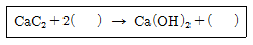
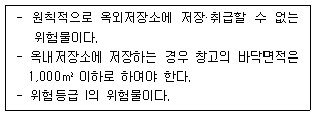
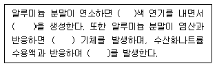
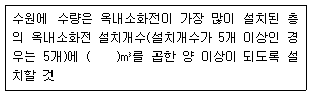
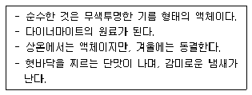
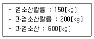
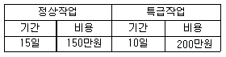

위험물기능장 (2015-04-04 기출문제)
1과목: 임의구분
1. 위험물안전관리법령상 위험등급 I에 해당하는 것은?
- CH3ONO2
- C6H2CH3(NO2)3
- C6H4(NO)2
- N4H4·HCl
(정답률: 72%)

2. 알코올류 6,500리터를 저장하는 옥외탱크저장소에 대하여 저장하는 위험물에 대한 소화설비 소요단위는?
- 2
- 4
- 16
- 17
(정답률: 69%)
3. 벤젠에 대한 설명 중 틀린 것은?
- 인화점이 -11[[℃]] 정도로 낮아 응고된 상태에서도 인화할 수 있다.
- 증기는 마취성이 있다.
- 피부에 닿으면 탈지작용을 한다.
- 연소시 그을음을 내지 않고 완전 연소한다.
(정답률: 84%)
4. “알킬알루미늄 등”을 저장 또는 취급하는 이동탱크저장소에 관한 기준으로 옳은 것은?
- 탱크 외면은 적색으로 도장을 하고, 백색문자로 동판의 양 측면 및 경판에 “화기주의” 또는 “물기주의”라는 주의사항을 표시한다.
- 20[kPa] 이하의 압력으로 불활성기체를 봉입해 두어야 한다.
- 이동저장탱크의 맨홀 및 주입구의 뚜껑은10[mm] 이상의 강판으로 제작하고, 용량은 2,000[ℓ] 미만이어야 한다.
- 이동저장탱크는 두께 5[mm] 이상의 강판으로 제작하고, 3[MPa] 이상의 압력으로 5분간 실시하는 수압시험에서 새거나 변형되지 않아야한다.
(정답률: 78%)
5. 다음중 인화점이 가장 높은 것은
- CH3COOCH3
- CH3OH
- CH3CH2OH
- CH3COOH
(정답률: 62%)
6. 위험물안전관리법령상 차량에 적재할 때 차광성이 있는 피복으로 가려야 하는 위험물이 아닌 것은?
- NaH
- P4S3
- KClO3
- CH3CHO
(정답률: 73%)
7. 다음 중 아염소산의 화학식은
- HClO
- HClO2
- HClO3
- HClO4
(정답률: 85%)
8. 위험물제조소 등 예방규정을 정하여야 하는 대상은?
- 칼슘을 400[kg] 취급하는 제조소
- 칼륨을 400[kg] 저장하는 옥내저장소
- 질산을 50,000[kg] 저장하는 옥외탱크저장소
- 질산염류를 50,000[kg] 저장하는 옥내저장소
(정답률: 62%)
9. 알칼리토금속에 속하는 것은?
- Li
- Fr
- Cs
- Sr
(정답률: 68%)
10. 위험물안전관리법령상 옥외탱크저장소의 탱크 중 압력탱크의 수압시험 기준은?
- 최대상용압력의 2배의 압력으로 20분간 실시하는 수압시험에서 새거나 변형되지 아니하여야 한다.
- 최대상용압력의 2배의 압력으로 10분간 실시하는 수압시험에서 새거나 변형되지 아니하여야 한다.
- 최대상용압력의 1.5배의 압력으로 20분간실시하는 수압시험에서 새거나 변형되지 아니하여야 한다.
- 최대상용압력의 1.5배의 압력으로 10분간실시하는 수압시험에서 새거나 변형되지 아니하여야 한다.
(정답률: 88%)
11. 다음 반응식에서 ( )에 알맞은 것을 차례대로 나열한 것은?

- H2O, C2H2
- H2O, CH4
- O2, C2H2
- O2, CH4
(정답률: 83%)
12. 위험물제조소 등의 안전거리의 단축기준을 적용함에 있어서 H≦PD2+a 일 경우 방화상 유효한 담의 높이는 2m 이상으로 한다. 여기서 H가 의미하는 것은?
- 제조소 등과 인근 건축물과의 거리
- 인근 건축물 또는 공작물의 높이
- 제조소 등의 외벽의 높이
- 제조소 등과 방화상 유효한 담과의 거리
(정답률: 79%)
13. CH3CHO에 대한 설명으로 옳지 않은 것은?
- 무색, 투명한 액체로서 산화시 아세트산을 생성한다.
- 완전 연소시 이산화탄소와 물이 생성된다.
- 백금, 철과 반응하면 폭발성 물질을 생성한다.
- 물에 잘 녹고 고무를 녹인다.
(정답률: 60%)
14. 다음 내용을 모두 충족하는 위험물에 해당하는 것은?

- 칼륨
- 유황
- 히드록실아민
- 질산
(정답률: 66%)
15. 니트로셀룰로오스에 캠퍼(장뇌)를 썩어서 알코올에 녹여 교질상태로 만든 것으로 필름, 안경테, 탁구공 등의 제조에 사용하는 위험물은?
- 질화면
- 셀룰로이드
- 아세틸퍼옥사이드
- 히드라진유도체
(정답률: 85%)
16. 염소산칼륨의 성질에 대한 설명으로 옳은 것은?
- 광택이 있는 적색의 결정이다.
- 비중은 약 2.3이며, 녹는점은 약 250[[℃]]다.
- 가열분해하면 염화나트륨과 산소를 발생한다.
- 알코올에 난용이고, 온수, 글리세린에 잘 녹는다.
(정답률: 72%)
17. 주유취급소 담 또는 벽의 일부분에 유리를 부착하는 경우에 대한 기준으로 틀린 것은?
- 유리를 부착하는 범위는 전체의 담 또는 벽의 길이의 10분의 1을 초과하지 아니할 것
- 하나의 유리판의 가로의 길이는 2m 이내일 것
- 유리판의 테두리를 금속제의 구조물에 견고하게 고정할 것
- 유리의 구조는 접합유리로 할 것
(정답률: 73%)
18. 위험물안전관리법령에서 정한 위험물의 취급에 관한 기준이 아닌 것은?
- 분사도장작업은 방화상 유효한 격벽 등으로 구획된 안전한 장소에서 실시한다.
- 추출공정에서는 추출관의 외부압력이 비정상으로 상승하지 않도록 한다.
- 열처리작업은 위험물이 위험한 온도에 도달하지 않도록 한다.
- 증류공정에 있어서는 위험물을 취급하는 설비의 내부압력의 변동 등에 의하여 액체 또는 증기가 새지 않도록 한다.
(정답률: 77%)
19. 니트로셀룰로오스의 화재 발생 시 가장 적합한 소화약제는?
- 물 소화약제
- 분말 소화약제
- 불활성가스소화약제
- 할로겐화합물 소화약제
(정답률: 81%)
20. 위험물안전관리법령상 벤젠을 적재하여 운반을 하고자 하는 경우에 있어서 함께 적재할 수 없는 것은? (단, 각 위험물의 수량은 지정수량의 2배로 가정한다.)
- 적린
- 금속의 인화물
- 질산
- 니트로셀룰로오스
(정답률: 75%)
2과목: 임의구분
21. 다음 ( ) 안에 알맞은 것을 순서대로 옳게 나열한 것은?

- 백, Al2O3, 산소, 수소
- 백, Al2O3, 수소, 수소
- 노란, Al2O5, 수소, 수소
- 노란, Al2O5, 산소, 수소
(정답률: 86%)
22. 농도가 높아질수록 위험성이 높아지는 산화성 물질로 가열에 의해 분해할 경우 물과 산소를 발생하며, 분해를 방지하기 위하여 안정제를 넣어 보관하는 것은?
- Na2O2
- KCl3
- H2O2
- NaNO3
(정답률: 81%)
23. 과망간산칼륨과 묽은 황산이 반응하였을 때 생성물이 아닌 것은?(오류 신고가 접수된 문제입니다. 반드시 정답과 해설을 확인하시기 바랍니다.)
- MnO4
- K2SO4
- MnSO4
- H2O
(정답률: 65%)
24. 다음은 위험물안전관리법령상 위험물제조소 등의 옥내소화전설비의 설치기준에 관한 내용이다. ( )에 알맞은 수치는?

- 2.4
- 7.8
- 35
- 260
(정답률: 90%)
25. 지정수량이 다른 물질로 나열된 것은?
- 질산나트륨, 과염소산
- 에틸알코올, 아세톤
- 벤조일퍼옥사이드, 칼륨
- 철분, 트리니트로톨루엔
(정답률: 68%)
26. 위험물안전관리법령상 제조소 등의 기술검토에 관한 설명으로 옳은 것은?
- 기술검토는 한국소방산업기술원에서 실시하는 것으로 일정한 제조소 등의 설치허가 또는 변경허가와 관련된 것이다.
- 기술검토는 설치허가 또는 변경허가와 관련된 것이나 제조소 등의 완공검사시 설치자가 임의적으로 기술검토를 신청할 수도 있다.
- 기술검토는 법령상 기술기준과 다르게 설계하는 경우에 그 안전성을 전문적으로 검증하기위한 절차이다.
- 기술검토의 필요성이 없으면 변경허가를 받을 필요가 없다.
(정답률: 80%)
27. 흐름 단면적이 감소하면서 속도수주가 증가하고 압력수두가 감소하여 생기는 압력차를 측정하여 유량을 구하는 기구로서 제작이 용이하고 비용이 저렴한 장점이 있으나 마찰손실이 커서 유체 수송을 위한 소요동력이 증가하는단점이 있는 것은?
- 로터미터
- 피토튜브
- 벤투리미터
- 오리피스미터
(정답률: 80%)
28. 다음에서 설명하는 위험물이 분해·폭발하는 경우 가장 많이 부피를 차지하는 가스는?

- 이산화탄소
- 수소
- 산소
- 질소
(정답률: 68%)
29. 과산화수소에 대한 설명으로 옳은 것은?
- 대부분 강력한 환원제로 작용한다.
- 물과 심하게 흡열 반응한다.
- 습기에 접촉해도 위험하지 않다.
- 상온에서 물과 반응하여 수소를 생성한다.
(정답률: 67%)
30. 위험물안전관리법령에서 정한 위험물안전관리자의 책무가 아닌 것은?
- 화재 등의 재난이 발생한 경우 응급조치 및 소방관서 등에 대한 연락 업무
- 화재 등의 재해의 방지에 관하여 인접하는 제조소 등과 그 밖의 관련되는 시설의 관계자와 협조체제 유지
- 위험물의 취급에 관한 일지의 작성·기록
- 안전관리대행기관에 대하여 필요한 지도·감독
(정답률: 85%)
31. 위험물안전관리법령에 따른 위험물의 저장·취급에 관한 설명으로 옳은 것은?
- 군부대가 군사목적으로 지정수량 이상의 위험물을 제조소 등이 아닌 장소에서 저장·취급하는 경우는 90일 이내의 기간 동안 임시로 저장·취급할 수 있다.
- 옥외저장소에서 위험물과 위험물이 아닌 물품을 함께 저장하는 경우는 물품 간 별도의 이격거리 기준이 없다.
- 유별을 달리하는 위험물을 동일한 장소에 저장할 수 없는 것이 원칙이지만, 옥내저장소에 제1류 위험물과 황린을 상호 1m 이상의 간격을 유지하여 저장하는 것은 가능하다.
- 옥내저장소에 제4류 위험물 중 제3석유류 및 제4석유류를 수납하는 용기만을 겹쳐 쌓는 경우에는 6m를 초과하지 않아야 한다.
(정답률: 71%)
32. 메탄올과 에탄올을 비교하였을 때 다음의 식이 적용되는 값은?
- 발화점
- 분자량
- 증기비중
- 비점
(정답률: 69%)
33. 각 위험물의 대표적인 연소 형태에 대한 설명으로 틀린 것은?
- 금속분은 공기와 접촉하고 있는 표면에서 연소가 일어나는 표면연소이다.
- 황은 일정 온도 이상에서 열분해하여 생성된 물질이 연소하는 분해연소이다.
- 휘발유는 액체 자체가 연소하지 않고, 액체표면에서 발생하는 가연성 증기가 연소하는 증발연소이다.
- 니트로셀룰로오스는 공기 중의 산소 없이도 연소하는 자기연소이다.
(정답률: 72%)
34. 단층건물 외에 건축물에 옥내탱크전용실을 설치하는 경우 최대용량을 설명한 것 중 틀린 것은?
- 지하 2층에 경유를 저장하는 탱크의 경우에는 20,000리터
- 지하 4층에 동식물유류를 저장하는 탱크의 경우에는 지정수량의 40배
- 지상 3층에 제4석유류를 저장하는 탱크의 경우에는 지정수량의 20배
- 지상 4층에 경유를 저장하는 탱크의 경우에는 5,000리터
(정답률: 52%)
35. 고형알코올에 대한 설명으로 옳은 것은
- 지정수량은 500kg이다.
- 이산화탄소 소화설비에 의해 소화한다.
- 제4류 위험물에 해당한다.
- 운반용기 외부에 “화기주의”라고 표시하여야 한다.
(정답률: 63%)
36. 다음 위험물을 완전 연소시켰을 때 나머지 셋의 위험물의 연소 생성물에 공통적으로 포함된 가스를 발생하지 않는 것은?
- 황
- 황린
- 삼황화린
- 이황화탄소
(정답률: 69%)
37. 과염소산은 무엇과 접촉할 경우 고체수화물을 생성시키는가?
- 물
- 과산화나트륨
- 암모니아
- 벤젠
(정답률: 64%)
38. 비수용성의 제1석유류 위험물을 4,000[ℓ]까지 저장·취급할 수 있도록 허가받은 단층건물의 탱크전용실에 수용성의 제2석유류 위험물을 저장하기 위한 옥내저장탱크를 추가로 설치할 경우 설치할 수 있는 탱크의 최대용량은?
- 16,000[ℓ]
- 20,000[ℓ]
- 30,000[ℓ]
- 60,000[ℓ]
(정답률: 64%)
39. 제5류 위험물에 속하지 않는 것은
- C6H4(NO2)2
- CH3ONO2
- C6H5NO2
- C3H5(ONO2)3
(정답률: 59%)
40. 위험물안전관리법령상 주유취급소에서 용량 몇 리터 이하의 이동저장탱크에 위험물을 주입할 수 있는가?(관련 규정 개정전 문제로 여기서는 기존 정답인 1번을 누르면 정답 처리됩니다. 자세한 내용은 해설을 참고하세요.)
- 3천
- 4천
- 5천
- 1만
(정답률: 64%)
3과목: 임의구분
41. 제4류 위험물을 지정수량의 30만 배를 취급하는 일반취급소에 위험물안전관리법령에 의해 최소한 갖추어야 하는 자체소방대의 화학소방차 대수와 자체소방대원의 수는?
- 2대, 15명
- 2대, 20명
- 3대, 15명
- 3대, 20명
(정답률: 86%)
42. 다음 물질이 서로 혼합되었을 때 폭발 또는 발화의 위험성이 높아지는 경우가 아닌 것은?
- 금속칼륨과 경유
- 질산나트륨과 유황
- 과망간산칼륨과 적린
- 알루미늄과 과산화나트륨
(정답률: 82%)
43. 인화칼슘의 일반적인 성질로 옳은 것은?
- 물과 반응하면 독성의 가스가 발생한다.
- 비중이 물보다 작다.
- 융점은 약 600[℃]정도이다.
- 흰색의 정육면체 고체상 결정이다.
(정답률: 77%)
44. 공기를 차단하고 황린을 가열하면 적린이 만들어지는데, 이 때 필요한 최소 온도는 약 몇[℃] 정도인가?
- 60
- 120
- 260
- 400
(정답률: 86%)
45. 위험물안전관리법령상 원칙적으로 이송취급소 설치장소에서 제외하는 곳이 아닌 것은?
- 해저
- 도로의 터널 안
- 고속국도의 차도 및 길어깨
- 호수·저수지 등으로서 수리의 수원이 되는 곳
(정답률: 79%)
46. 과산화벤조일(벤조일퍼옥사이드)의 화학식을 옳게 나타낸 것은?
- CH3NO2
- (CH3COC2H5)2O2
- (CH3CO)2O2
- (C6H5CO)2O2
(정답률: 71%)
47. 에탄올 1몰이 표준상태에서 완전 연소하기 위해 필요한 공기량은 약 몇[ℓ]인가? (단, 공기 중 산소의 부피는 21[vol%]이다.)
- 122
- 244
- 320
- 410
(정답률: 64%)
48. 다음 중 요오드값(아이오딘값)이 가장 큰 것은?
- 야자유
- 피마자유
- 올리브유
- 정어리기름
(정답률: 87%)
49. 다음 중 1mol에 포함된 산소의 수가 가장 많은 것은?
- 염소산
- 과산화나트륨
- 과염소산
- 차아염소산
(정답률: 84%)
50. 위험물안전관리법령상 위험물제조소 등의 완공검사 신청시기로 틀린 것은?
- 지하탱크가 있는 제조소 등의 경우 : 당해 지하탱크를 매설하기 전
- 이동탱크저장소 : 이동저장탱크를 완공하고 상치장소를 확보하기 전
- 간이탱크저장소 : 공사를 완료한 후
- 옥외탱크저장소 : 공사를 완료한 후
(정답률: 79%)
51. 산화성 고체 위험물이 아닌 것은?
- NaClO3
- AgNO3
- KBrO3
- HClO4
(정답률: 80%)
52. 상온(25[℃])에서 액체인 것은?
- 질산메틸
- 니트로셀룰로오스
- 피크린산
- 트리니트로톨루엔
(정답률: 60%)
53. 산화프로필렌 20[vol%], 디에틸에테르 30[vol%], 이황화탄소 30[vol%], 아세트알데히드 20[vol%]인 혼합증기의 폭발 하한값은? (단, 폭발범위는 산화프로필렌 2.1~38[vol%], 디에틸에테르 1.9~48[vol%], 이황화탄소 1.2~44[vol%], 아세트알데히드 4.1~57[vol%]이다.)
- 1.8[vol%]
- 2.1[vol%]
- 13.6[vol%]
- 48.3[vol%]
(정답률: 69%)
54. 다음 물질을 저장하는 저장소로 허가를 받으려고 위험물저장소 설치허가신청서를 작성하려고 한다. 해당하는 지정수량의 배수는 얼마인가?

- 12
- 9
- 6
- 5
(정답률: 80%)
55. 관리도에서 측정한 값을 차례로 타점했을 때 점이 순차적으로 상승하거나 하강하는 것을 무엇이라 하는가?
- 연(Run)
- 주기(Cycle)
- 경향(Trend)
- 산호(Dispersion)
(정답률: 80%)
56. 어떤 공장에서 작업을 하는데 있어서 소요되는 기간과 비용이 다음과 같을 때 비용구배는? (단, 활동시간의 단위는 일(일)로 계산한다.)

- 50,000원
- 100,000원
- 200,000원
- 500,000원
(정답률: 80%)
57. 200개들이 상자가 15개 있을 때 각 상자로부터 제품을 랜덤하게 10개씩 샘플링할 경우, 이러한 샘플링 방법을 무엇이라 하는가?
- 층별 샘플링
- 계통 샘플링
- 취락 샘플링
- 2단계 샘플링
(정답률: 73%)
58. 생산보전(PM : Productive Maintenance)의 내용에 속하지 않는 것은?
- 보전예방
- 안전보전
- 예방보전
- 개량보전
(정답률: 70%)
59. 모든 작업을 기본동작으로 분해하고, 각 기본동작에 대하여 성질과 조건에 따라 정해놓은 시간치를 적용하여 정미시간을 산정하는 방법은?
- PTS법
- Work Sampling법
- 스톱워치법
- 실적자료법
(정답률: 78%)
60. 품질특성을 나타내는 데이터 중 계수치 데이터에 속하는 것은?
- 무게
- 길이
- 인장강도
- 부적합품률
(정답률: 87%)